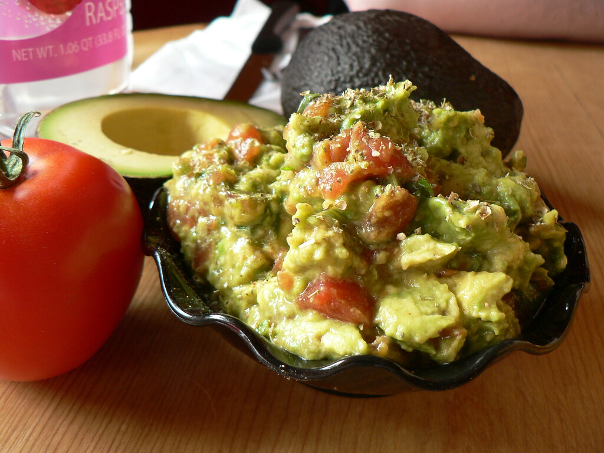

Guacamole
Description of the dish:
Guacamole is an avocado-based dip, spread, or salad first developed in Mexico. It has become part of international and American cuisine as a dip, condiment and salad ingredient.
In addition to being cold and refreshing, the guacamole recipe can often benefit form increasing the heat content, using additional jalapeno or serrano peppers. The recipe below can be scaled for a large yield with little extra effort, making this a great option for potlucks or to enjoy for a few extra days.
Ingredients
- 4 ripe Haas avocados (Haas is mandatory for taste - non-negotiable!)
- 6 large garlic cloves or 1 large tablespoon minced garlic
- 1/2 yellow pepper, diced medium to small
- 1-2 jalapenos or serranos to taste
- 1/2 to 1 can white kidney beans for bulk
- 1/2 head of cilantro
- 1/2 medium red onion
- 1 lime
- 2 Roma tomatoes
- Sea salt
- Fresh ground black pepper
- Distilled white vinegar
- Optional: Tabasco (Chipotle or regular), cayenne pepper
Preparation Steps
- Remove peels and seeds from avocados. Consider leaving a half untouched until the end if you prefer it chunky. If so, complete all the mixing steps below, then add the last half diced to incorporate a chunky consistency.
- Add the avocados to a mixing bowl and mash to the desired consistency. A food processor can be used to make quick work of this.
- Add the garlic to the avocado paste
- Mix the avocado with the kidney beans to add some bulk
- Dice up the red onion, yellow pepper, jalapeno (or serrano) peppers
- Slowly add onions and peppers, ensuring not to overcrowd the mixture. It should be mostly avocado, but large additions can throw off the proportions. Be careful!
- Incorporate the half-head of cilantro
- Next, add a half teaspoon of sea salt and a half teaspoon of frsh ground black pepper
- Add roughly 1 teaspoon of distilled white vinegar to give the dish a small acidic bite
- Lastly, dice up the tomatoes and gently spatulate into the mixture. This is done last to keep the tomatoes from getting squishy.
Optional ingredients can be added to taste if there is more spice desired